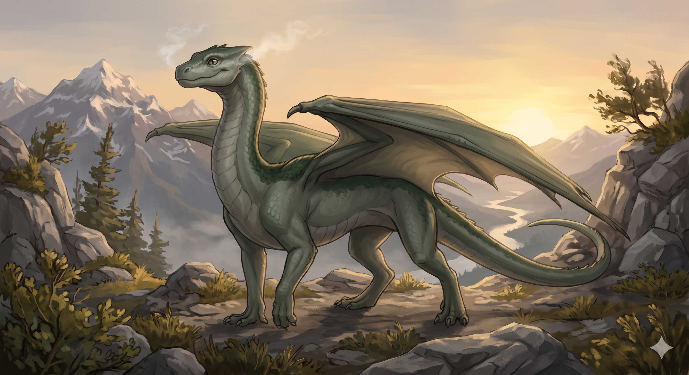

A young steam dragon (level 19) who secretly follows the party against elder orders, joins Tasha and Kiwi in the Bunny Grotto dungeon, fights in the pirate airship battle, delivers the Orb of Air to Brightwind, and travels to Dragonholm with Penryth to rally dragonkind for the war. Appears in: Couch Potato Chaos, Couch Potato Crisis
Profile

-
Appears in: Couch Potato Chaos, Couch Potato Crisis
-
Aliases: Kaze, Kazezu The Steam Dragon
-
Cross-book continuity: Appears in both books.
-
Dragon classification: Steam dragon — deals sustained steam breath attacks (less raw damage than fire dragons but can maintain attacks for hours without refueling)
-
Description by book:
- Couch Potato Chaos: A young steam dragon (level 19) who secretly follows the party against elder orders, joins Tasha and Kiwi in the Bunny Grotto dungeon, fights in the pirate airship battle, delivers the Orb of Air to Brightwind, and travels to Dragonholm with Penryth to rally dragonkind for the war.
- Couch Potato Crisis: Now bearing the name Kazezu after his heroic delivery of the Orb of Air, he has grown significantly in size and power. He flies with the party on their quest to rescue Kiwi, detects the captive black dragon Zabrelvamier, fights in the airship dogfights over the Zhakaran coast, and battles Blobby and other enemies alongside the party.
-
Personality: Brave, loyal, and earnest with a childlike enthusiasm that matures as he grows. Communicates exclusively through thought-speech, addressing party members with formal warmth (e.g., “Friend Hermes,” “Player Tasha”). Describes himself as a mighty steam dragon but is humble about his limitations — he freely admits when he is too small to carry a rider or too weak to damage a particular foe. Possesses a playful side (enjoys fish, elven singing, and naps on treasure; hates vegetables, especially spinach). His dragon senses allow him to detect other draconic presences at great range and smell where a dragon has been recently, making him invaluable for reconnaissance.
-
Backstory: A young steam dragon from Dragonholm, the settlement at the North Pole where most dragons relocated after being displaced from the Laundry Mountain by [King Dourmal](./character-dourmal.html)'s slaughter. Kaze was a childhood friend of Hermes and Slimon, and had leveled with [Princess Kiwi](./character-princess-kiwistafel-questgiver.html) when they were young. When the party set out from Brightwind, the elder red dragon Penryth forbade Kaze from traveling with them — the route went too close to the dwarven kingdom, and relations between dragons and dwarves were hostile. Kaze defied this order and followed the party secretly from the air, keeping his distance but never losing sight of them.
-
Significant story events:
- Flying Monkey Rescue (Chaos): Spotted the party being attacked by hundreds of flying monkeys at a rope bridge. Dove in and used wide blasts of steam to draw half the monkeys away from Kiwi and Tasha. Tried to catch the princess when the bridge collapsed but was too slow — followed them into an underwater cavern where a dynamically spawning dungeon (The Bunny Grotto) formed around them.
- The Bunny Grotto (Chaos): Joined Tasha and Kiwi as a full party member inside the rabbit-themed dungeon. Helped pull mobs and fought alongside the party through the labyrinth, including the samurai rabbit boss Yojimbo. Kiwi agreed to let him stay with the party at least until the borders of Dwarselvania.
- Pirate Airship Battle (Chaos): During the pirate dirigible attack, Kaze single-handedly attacked the airship fleet — circling the balloons and blasting them with directed jets of high-pressure steam. He sank three pirate dirigibles and drove the rest into retreat. Tasha noted this was “well done” and earned XP from the enemies who died on the ships he destroyed.
- Orb of Air Delivery (Chaos): After the battle at the Spiral Tower, Kaze carried the Orb of Air back to [Brightwind Keep](./location-brightwind-keep.html). The journey was arduous — the orb resisted being carried away from its master, causing wind to push against him and air pressure to lower his altitude. What should have been days of flying took multiple weeks of short low-altitude hops, fighting off air-based mobs along the way.
- Journey to Dragonholm (Chaos): After delivering the orb to King Questgiver and recounting the party’s adventures, Kaze departed with Penryth to Dragonholm at the North Pole to rally the Dragon Kingdom for the coming war.
- Naming Ceremony (Crisis): At Dragonholm, the elder Penryth officially granted Kaze a name extension in recognition of delivering the Orb of Air. His name became “Kazezu, The Steam Dragon.” The ceremony transformed him — he grew nearly two feet in height and four in length, his voice deepened, and he became significantly more powerful and intimidating. Tasha congratulated him; Kazezu noted she looked “so tiny” to him now.
- Kiwi’s Abduction (Crisis): Present during the Jabberwock attack when Queen Murderjoy abducted [Princess Kiwi](./character-princess-kiwistafel-questgiver.html). Pan sent him to fly to the castle and inform the king.
- Rescue Mission / Airship Travel (Crisis): Joined the party’s quest to rescue Kiwi, traveling aboard K’her’s airship. His upgraded size meant he could barely fit on deck and caused the ship to dip when he landed. Eventually he grew too large to land at all and had to fly alongside.
- Detecting Zabrelvamier (Crisis): While aboard the airship near the Zhakaran coast, Kazezu sensed the presence of another dragon — Zabrelvamier, The Black Dragon, who was being held captive by Zhakaran forces. He reported that the black dragon’s mind felt “wrong — like that of an unthinking animal,” confirming the Zhakarans had done something to control him.
- Airship Dogfight over the Zhakaran Coast (Crisis): Engaged enemy boblin-piloted airplanes in aerial combat during the Dea Latis airship battle, chasing and fighting them in dragon-versus-airplane dogfights.
- Rescuing Tasha from Ironfall (Crisis): Flew to Tasha’s aid when she was cornered by soldiers, performing a flyby and releasing a line of hot steam to separate her from her attackers so she could escape to the airship.
- The Gathering / Blobby Battle (Crisis): Fought the dread fiend Blobby by circling the giant slime monster and pelting it with jets of steam. His attacks dealt only nominal damage against Blobby’s thick hide, and tentacles swatted at him whenever he tried to approach Pan.
- Zhakara Underground (Crisis): In the underground passages of Zhakara, Kazezu’s draconic senses detected that a large dragon had been in the area recently (Zabrelvamier), and he could smell its trail — leading the party deeper into enemy territory.
- Bato Battle (Crisis): Dove at the iron construct Bato, pelting it with jets of hot steam. His steam was sufficient to melt flesh but had almost no effect on the metal construct.
-
Notable Quotes:
“Hello, human. I said hello. Can you not hear me? Of course I am, silly biped. This is how dragons communicate. Have you never spoken with a dragon before?” — First meeting with Tasha (Chaos).
“Make it seven. I want to come too.” — Volunteering to join the party, defying the elder dragon’s orders (Chaos).
“I was able to sink another three ships! Most of them got away, though.” — Reporting after the pirate airship battle (Chaos).
“Thank you, great elder. You honor me with this new name.” — Receiving the name Kazezu at the naming ceremony (Crisis).
“Thank you, Player Tasha. You look so tiny to me now. This new form will take some getting used to.” — After his transformation (Crisis).
“Wait! There’s a dragon nearby. I can sense it. He’s there, look! It’s Zabrelvamier, The Black Dragon! He’s ignoring me. His mind feels strange, like that of an unthinking animal. Not like a dragon at all. His mind feels wrong somehow. They must have done something to him.” — Detecting the captive black dragon from the airship (Crisis).
“Tasha, hurry and get on the ship!” — Rescuing Tasha during the escape from Ironfall (Crisis).
“Friend Hermes, are you okay?” — Checking on Hermes during the battle in Zhakara’s underground caverns (Crisis).
“I smell something. A dragon was here recently. A big one.” — Tracking Zabrelvamier’s trail underground (Crisis).
“It doesn’t look like I’ll be able to fit. I miss being small enough to fit through doors.” — Arriving at a dungeon entrance after his size upgrade (Crisis).
-
Relationships: Close childhood friend of Hermes and Slimon. Former leveling partner and friend of [Princess Kiwi](./character-princess-kiwistafel-questgiver.html), who patted his head in greeting when they reunited. Mentored by Penryth (Penrythmysandlagorndrixticon), The Red Dragon, the elder dragon of Dragonholm. Loyal companion to the full party (Tasha, Ari, Pan, Hermes, Slimon, Denver). Addressed respectfully by [General Kegan](./character-general-kegan.html). His willingness to defy elder orders for the party demonstrates deep loyalty. In the epilogue of Crisis, Pan reflects that she feels nothing for Kaze “outside of how useful he was in combat” — suggesting she undervalues his friendship during her emotionally disconnected phase.
-
Physical description: In his original form, Kaze is a small greenish-gray dragon, only slightly larger than Denver the velociraptor. He has a long neck, bat-like wings, and a streamlined body typical of a steam dragon. After receiving his name extension “Kazezu,” he grows nearly two feet taller and four feet longer, becoming a significantly more imposing figure — twice as wide as a standard doorway, causing ships to dip under his weight, and too large to fit inside most buildings. His coloration remains greenish-gray with the steam dragon phenotype. He has a childlike quality to his eyes and expressions that matures with his naming transformation, after which his voice deepens and sounds more mature. His breath weapon produces jets and wide blasts of super-heated steam emitted from his mouth, capable of killing weaker enemies outright and damaging groups at range.
-
References: Couch Potato Chaos: Chapter 24 - The Bridge of Certain Doom, Chapter 25 - Golden Axe, Chapter 28 - The Road to [Slime’s Row](./location-slimewater-slime-s-row.html), Chapter 29 - Air Pirates, Chapter 35 - They Call Me Player, Chapter 36 - The Dragon and the Dwarf, Chapter 39 - Fire and Life | Couch Potato Crisis: Couch Potato Crisis, Dea Latis, Into Zhakara, The Fifth Player, The Gathering, The End of Zhakara, Epilogue